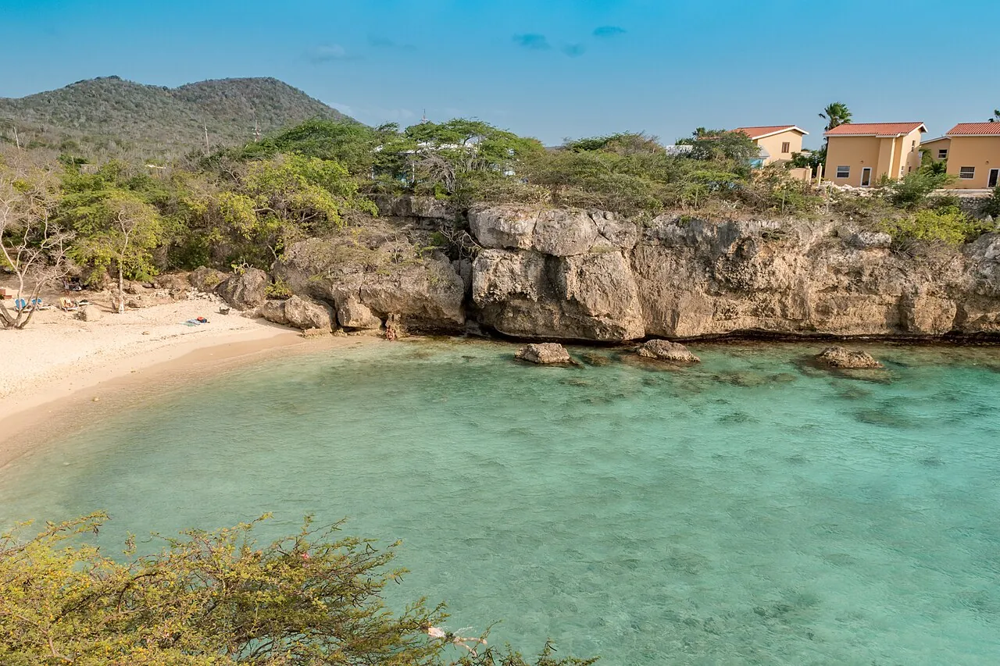

Playa Lagun
Curaçao · snorkeling, plongée

Petite crique encadrée de falaises, où les tortues viennent se nourrir. Un snorkeling facile et spectaculaire.
- Lieu
- Curaçao
- Niveau
- Débutant
- Activités
- snorkeling, plongée
- Type d'eau
- Mer / océan
- Coordonnées
- 12.32, -69.15 (position approximative du secteur)
Dangers à connaître
- Tortues : ne les poursuis pas.
- Rochers sur les côtés.
Le conseil d'Ocean Buddy
Entre par le centre de la crique pour éviter les rochers.
Ouvrir dans Ocean Buddy Télécharger sur l'App Store
Source : Fiche Ocean Buddy · septembre 2026 · à vérifier localement.